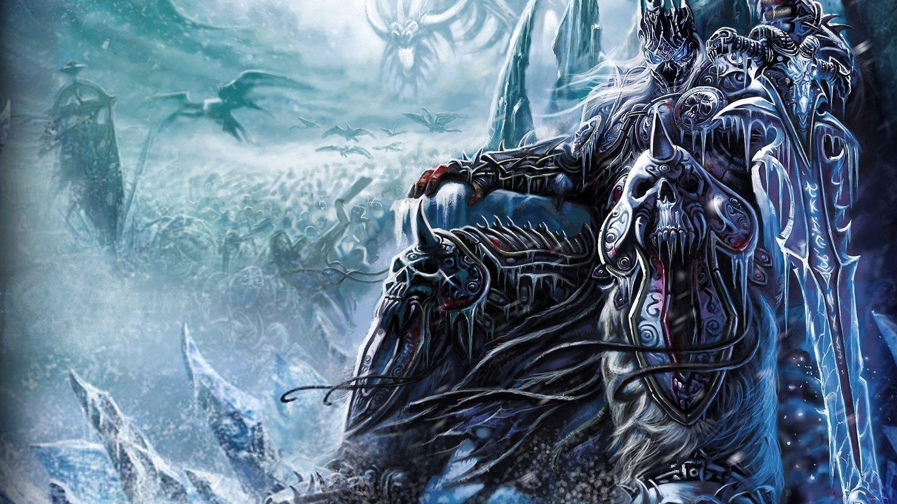
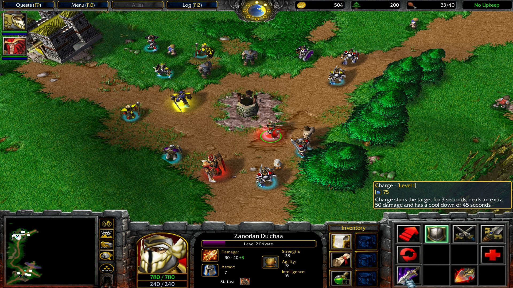
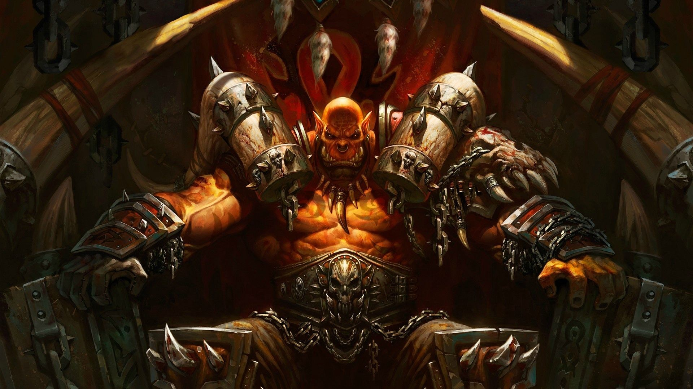
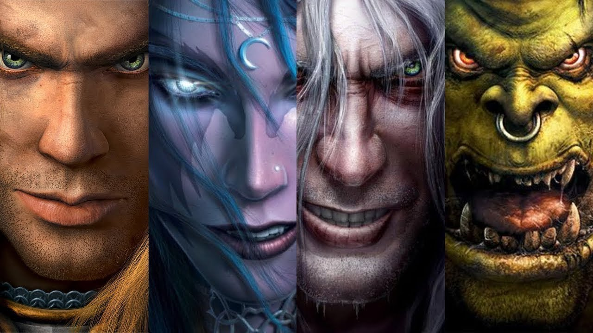
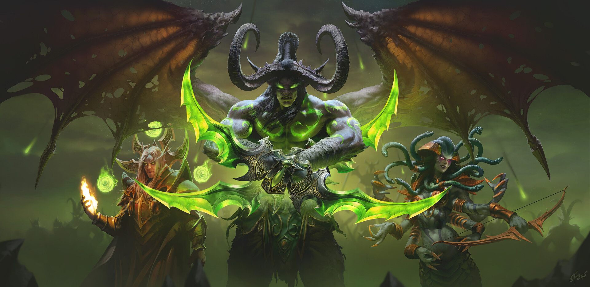

Warcraft 3: Frozen Throne
Warcraft III: The Frozen Throne is the expansion pack for Warcraft III: Reign of Chaos, a real-time strategy video game by Blizzard Entertainment. It was released worldwide on July 1, 2003 for Microsoft Windows and Mac OS X. The Frozen Throne builds upon the story of Reign of Chaos and depicts the events after the main game's conclusion. The single-player unfolds from the perspective of two new protagonists—the Night Elf warden Maiev Shadowsong and the Blood Elf prince Kael'Thas—as well as returning protagonist Arthas Menethil. Additionally, the expansion contains Act I of a separate Horde campaign that is independent from the main storyline with Blizzard releasing Acts II and III via patch in December 2003, taking in player feedback of Act I when developing these chapters.
The expansion adds new units, buildings and heroes for each faction, two new auxiliary races, five neutral heroes (with three more later added by patches) as well as a number of tweaks to the gameplay and balancing. Sea units were reintroduced which were absent in Reign of Chaos. Battle.net-powered multiplayer was expanded by the addition of clans, automated tournaments and new maps and custom scenarios.
The expansion adds new units, buildings and heroes for each faction, two new auxiliary races, five neutral heroes (with three more later added by patches) as well as a number of tweaks to the gameplay and balancing. Sea units were reintroduced which were absent in Reign of Chaos. Battle.net-powered multiplayer was expanded by the addition of clans, automated tournaments and new maps and custom scenarios.

Gameplay
Warcraft III: The Frozen Throne is a real-time strategy video game that puts players in control of a group of units and buildings in order to achieve a variety of goals. The expansion fine-tunes the gameplay of the main game rather than changing it. The food limit and the upkeep requirements, which dealt a penalty on resource gain when too many units were active at the same time, have both been increased slightly, leading to the ability to mobilize somewhat larger and more powerful forces. The cost of buildings has been decreased as well, allowing for a quicker start of the game.
The weapon and armor type system has been completely revamped and a lot of units have had their weapon or armor types changed, and the weapon types are effective and ineffective against different armor types compared to Reign of Chaos. Changes to building costs and the addition of new early-game defensive structures serve to deter early-game tactics that relied on rushing the enemy with hero units. In addition to treasure items found in the main game, enemies now will also leave "runes" upon defeat that can be used to replenish health or mana. In addition, The Frozen Throne re-introduces naval battles, which were previously featured in Warcraft II: Tides of Darkness and its expansion, but almost completely absent in Warcraft III.
While enemies in some single-player missions, players can control them in others. The Draenei on the other hand are found only in one of the campaigns and are classified by Blizzard as creeps, i.e. neutral units that attack all parties equally. The expansion also added five neutral hero units, some of which appear in the single player campaigns. Neutral heroes can be used in melee maps via the Tavern, a neutral building used to hire them.[10] The tavern can also instantly revive any fallen hero, with an increased resource cost, and reduced health and mana of the revived hero.
The weapon and armor type system has been completely revamped and a lot of units have had their weapon or armor types changed, and the weapon types are effective and ineffective against different armor types compared to Reign of Chaos. Changes to building costs and the addition of new early-game defensive structures serve to deter early-game tactics that relied on rushing the enemy with hero units. In addition to treasure items found in the main game, enemies now will also leave "runes" upon defeat that can be used to replenish health or mana. In addition, The Frozen Throne re-introduces naval battles, which were previously featured in Warcraft II: Tides of Darkness and its expansion, but almost completely absent in Warcraft III.

For each faction, The Frozen Throne adds several new units and buildings, including a player-controlled shop, and one new hero, a kind of powerful unit which each can only be recruited once, per faction.To complement the new shop, normal units can be upgraded to carry items. Two new Factions, the Naga and Draenei, have also been added. The Naga feature in all four campaigns and have their own production and defense buildings as well as unique units with separate skills.While enemies in some single-player missions, players can control them in others. The Draenei on the other hand are found only in one of the campaigns and are classified by Blizzard as creeps, i.e. neutral units that attack all parties equally. The expansion also added five neutral hero units, some of which appear in the single player campaigns. Neutral heroes can be used in melee maps via the Tavern, a neutral building used to hire them.[10] The tavern can also instantly revive any fallen hero, with an increased resource cost, and reduced health and mana of the revived hero.

Settings and characters
The Frozen Throne takes place on the fictional high fantasy world of Azeroth.[16] In the main game, the human paladin Arthas Menethil was corrupted by the Lich King Ner'zhul, an undead sorcerer entrapped in ice (the titular "Frozen Throne"), and became his lieutenant. Arthas invaded the High Elven kingdom and killed its general, Sylvanas Windrunner, whom he resurrected to serve him. He then paved the way for an invasion by the Burning Legion—a demonic force from another realm—who were ultimately defeated by an alliance of elves, humans, and orcs.
In the events leading up to the victory against the Legion, Night Elf leader Tyrande Whisperwind freed the imprisoned Illidan Stormrage. However, Illidan consumed a demonic relic, becoming half-demon himself, and was cast out. After the Burning Legion's defeat, Illidan was contacted by Kil'jaeden, one of the remaining masters of the Legion, who tasks him with destroying the rebellious Lich King.
The expansion introduces new factions to the game's universe: The Blood Elves, former High Elves that now suffer from addiction to magic; the Naga, mutated former Night Elves; and the Draenei, the original inhabitants of Draenor, the orc homeworld now known as Outland. The Frozen Throne follows the quest of the Night Elf warden Maiev Shadowsong to recapture the renegade elf Illidan Stormrage, Blood Elf prince Kael'thas' struggle with the Alliance and subsequent service to Illidan, Arthas' attempt to rescue the Lich King from Illidan's assault, and Sylvanas Windrunner's fight against the Burning Legion. The Horde campaign is separate from the other three, being a stand-alone story and using more role-playing game mechanics over real-time strategy game mechanics. The campaign chronicles the early days of the Horde's newly established kingdom from the perspective of the beastmaster hero Rexxar.
In the events leading up to the victory against the Legion, Night Elf leader Tyrande Whisperwind freed the imprisoned Illidan Stormrage. However, Illidan consumed a demonic relic, becoming half-demon himself, and was cast out. After the Burning Legion's defeat, Illidan was contacted by Kil'jaeden, one of the remaining masters of the Legion, who tasks him with destroying the rebellious Lich King.
The expansion introduces new factions to the game's universe: The Blood Elves, former High Elves that now suffer from addiction to magic; the Naga, mutated former Night Elves; and the Draenei, the original inhabitants of Draenor, the orc homeworld now known as Outland. The Frozen Throne follows the quest of the Night Elf warden Maiev Shadowsong to recapture the renegade elf Illidan Stormrage, Blood Elf prince Kael'thas' struggle with the Alliance and subsequent service to Illidan, Arthas' attempt to rescue the Lich King from Illidan's assault, and Sylvanas Windrunner's fight against the Burning Legion. The Horde campaign is separate from the other three, being a stand-alone story and using more role-playing game mechanics over real-time strategy game mechanics. The campaign chronicles the early days of the Horde's newly established kingdom from the perspective of the beastmaster hero Rexxar.

SYNOPSIS
Maiev Shadowsong pursues the fugitive Illidan to a set of islands. There, she finds Illidan has allied himself with the Naga and obtained an artifact called the Eye of Sargeras, forcing Maiev to call on Illidan's brother Malfurion Stormrage and Malfurion's wife Tyrande for aid. Illidan flees with the eye to the kingdom of Lordaeron. When Tyrande is swept away by a river while helping a group of Blood Elves led by the prince Kael'thas, Maiev convinces Malfurion that she died to maintain their pursuit of Illidan. They capture Illidan and destroy the Eye, which Illidan reveals he was using to destroy the Lich King. When Kael'thas informs him that Tyrande may still be alive, he uses the Naga to help Malfurion find and rescue her. In thanks, Malfurion pardons him for his past crimes. With Maiev still in pursuit, Illidan flees to the planet Draenor.
In Lordaeron, the Blood Elves are in an uneasy alliance with Garithos, the racist human commander of the remaining Alliance forces. When their prince Kael'thas is only able to complete a number of demeaning tasks with the help of Illidan's Naga, Garithos imprisons Kael'thas and his forces for treason. The Naga leader Lady Vashj rescues them and leads them to Outland, where they join forces with Illidan, who promises to satisfy their addiction to magic. Illidan's master Kil'jaeden finds Illidan and plans to punish him for failing to destroy the Lich King, but decides not to when Illidan claims that he traveled to Outland to recruit forces for a new assault.
In Lordaeron, the Blood Elves are in an uneasy alliance with Garithos, the racist human commander of the remaining Alliance forces. When their prince Kael'thas is only able to complete a number of demeaning tasks with the help of Illidan's Naga, Garithos imprisons Kael'thas and his forces for treason. The Naga leader Lady Vashj rescues them and leads them to Outland, where they join forces with Illidan, who promises to satisfy their addiction to magic. Illidan's master Kil'jaeden finds Illidan and plans to punish him for failing to destroy the Lich King, but decides not to when Illidan claims that he traveled to Outland to recruit forces for a new assault.
Gameplay Trailer